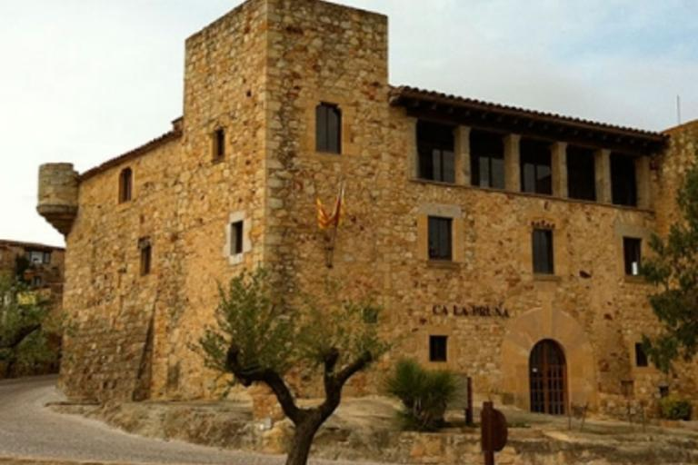

Visita · Montgrí
Ca la Pruna fou en el seu origen un casal situat fora del nucli de Pals, extramurs. La seva data de construcció se situa probablement entre els segles XV i XVI, encara que els treballs de…